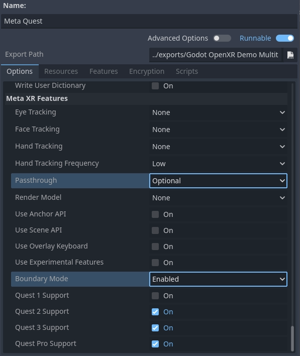

AR / Passthrough
Thực tế tăng cường (Augmented Reality) được hỗ trợ qua nhiều phương pháp khác nhau tùy theo khả năng của phần cứng.
Các headset như Magic Leap và kính như TiltFive hiển thị kết quả kết xuất trên màn hình nhìn xuyên thấu, cho phép người dùng nhìn thấy thế giới thực.
Các headset như Quest, HTC Elite và Lynx R1 thực hiện điều này qua một kỹ thuật gọi là video passthrough, trong đó camera ghi lại thế giới thực và các hình ảnh này được dùng làm nền để hiển thị kết quả kết xuất của chúng ta lên trên.
Ghi chú
Passthrough được triển khai rất khác nhau giữa các nền tảng.
Trong Godot 4.3, chúng tôi đã triển khai một cách tiếp cận thống nhất được giải thích trong trang trợ giúp này, nên bạn không cần lo về những khác biệt đó; phần triển khai XRInterface giờ chịu trách nhiệm áp dụng phương pháp phù hợp với từng nền tảng [1].
Với các headset như Meta Quest và HTC Elite, bạn cần dùng OpenXR vendors plugin v3.0.0 trở lên để bật video passthrough.
Để tương thích ngược, API cũ cho passthrough vẫn còn khả dụng, nhưng bạn nên làm theo hướng dẫn mới bên dưới.
Các chế độ hòa trộn môi trường
Cách chúng ta cấu hình chức năng VR hoặc AR là đặt chế độ hòa trộn môi trường (environment blend mode). Chế độ này xác định cách môi trường (thế giới thực) được hòa trộn với thế giới ảo.
Chế độ pha trộn |
Mô tả |
|---|---|
XR_ENV_BLEND_MODE_OPAQUE |
Hình ảnh kết xuất là đục, chúng ta không nhìn thấy thế giới thực. Chúng ta đang ở chế độ VR. Chế độ này sẽ tắt passthrough nếu dùng video passthrough. |
XR_ENV_BLEND_MODE_ADDITIVE |
Hình ảnh kết xuất được cộng vào thế giới thực và trông sẽ bán trong suốt. Chế độ này thường được dùng với các thiết bị nhìn xuyên thấu không thể che khuất thế giới thực. Chế độ này sẽ bật passthrough nếu dùng video passthrough. |
XR_ENV_BLEND_MODE_ALPHA_BLEND |
Hình ảnh kết xuất được hòa trộn alpha với thế giới thực. Trên các thiết bị nhìn xuyên thấu có hỗ trợ, giá trị alpha sẽ điều khiển độ trong mờ của quang học. Trên các thiết bị video passthrough, việc hòa trộn alpha được áp dụng với hình ảnh video. Passthrough cũng sẽ được bật nếu phù hợp. |
Bạn có thể đặt chế độ hòa trộn môi trường cho ứng dụng qua thuộc tính environment_blend_mode của instance XRInterface.
Bạn có thể truy vấn các chế độ hòa trộn mà phần cứng hỗ trợ bằng thuộc tính get_supported_environment_blend_modes trên cùng instance đó.
Cấu hình nền
Khi đặt chế độ hòa trộn thành XR_ENV_BLEND_MODE_ALPHA_BLEND, bạn phải đặt thuộc tính transparent_bg trên Viewport thành true. Khi dùng chế độ hòa trộn XR_ENV_BLEND_MODE_ADDITIVE, bạn nên đặt màu nền thành màu đen.
Cả hai cách đều khiến phần kết xuất nền không đóng góp vào chiếu sáng. Vì vậy, bạn cũng nên điều chỉnh cài đặt môi trường cho phù hợp và đảm bảo có đủ ánh sáng môi trường (ambient light) để chiếu sáng scene.
Ghi chú
Một số AR SDK có cung cấp thông tin ánh sáng môi trường, thậm chí cung cấp đầy đủ radiance map để tạo phản chiếu thế giới thực trên các vật thể ảo. Chức năng XR lõi của Godot hiện chưa hỗ trợ việc này, tuy nhiên chức năng này có thể được cung cấp qua plugin.
Dành riêng cho OpenXR
Trong OpenXR, bạn có thể cấu hình chế độ hòa trộn mặc định muốn dùng. Godot sẽ chọn chế độ hòa trộn này khi khởi động nếu khả dụng. Nếu không khả dụng, Godot sẽ mặc định dùng chế độ hòa trộn được hỗ trợ đầu tiên do XR runtime cung cấp.

Với các thiết bị passthrough, OpenXR yêu cầu cấu hình thêm một số cài đặt. Các cài đặt này phụ thuộc vào nền tảng và được cung cấp qua OpenXR vendors plugin.
Ví dụ, đây là các cài đặt cần thiết trên Meta Quest:

Cài đặt Passthrough xác định passthrough được hỗ trợ hay thậm chí là bắt buộc.
Boundary Mode cho phép bạn xác định có cần guardian hay không; tắt hoàn toàn tùy chọn này đòi hỏi passthrough phải luôn được bật.
Kết hợp tất cả lại
Kết hợp tất cả những điều trên, chúng ta có thể dùng đoạn code sau làm nền tảng:
@onready var viewport : Viewport = get_viewport()
@onready var environment : Environment = $WorldEnvironment.environment
func switch_to_ar() -> bool:
var xr_interface: XRInterface = XRServer.primary_interface
if xr_interface:
var modes = xr_interface.get_supported_environment_blend_modes()
if XRInterface.XR_ENV_BLEND_MODE_ALPHA_BLEND in modes:
xr_interface.environment_blend_mode = XRInterface.XR_ENV_BLEND_MODE_ALPHA_BLEND
viewport.transparent_bg = true
elif XRInterface.XR_ENV_BLEND_MODE_ADDITIVE in modes:
xr_interface.environment_blend_mode = XRInterface.XR_ENV_BLEND_MODE_ADDITIVE
viewport.transparent_bg = false
else:
return false
environment.background_mode = Environment.BG_COLOR
environment.background_color = Color(0.0, 0.0, 0.0, 0.0)
environment.ambient_light_source = Environment.AMBIENT_SOURCE_COLOR
return true
func switch_to_vr() -> bool:
var xr_interface: XRInterface = XRServer.primary_interface
if xr_interface:
var modes = xr_interface.get_supported_environment_blend_modes()
if XRInterface.XR_ENV_BLEND_MODE_OPAQUE in modes:
xr_interface.environment_blend_mode = XRInterface.XR_ENV_BLEND_MODE_OPAQUE
else:
return false
viewport.transparent_bg = false
environment.background_mode = Environment.BG_SKY
environment.ambient_light_source = Environment.AMBIENT_SOURCE_BG
return true
Shadow to opacity
Shadow to opacity là một render mode dành cho spatial shader của Godot, được giới thiệu từ Godot 3 dành riêng cho AR. Đây là một render mode đặc biệt, trong đó bề mặt càng nằm trong bóng thì càng trở nên đục. Khi bề mặt được chiếu sáng hoàn toàn, nó trở nên trong suốt hoàn toàn và do đó để lộ thế giới thực.
Tuy nhiên, về thực chất bề mặt được kết xuất trong giai đoạn opaque. Điều này dẫn đến hai hệ quả:
Vì cả depth buffer và color buffer đều được ghi, chúng ta che khuất mọi hình học phía sau bề mặt ngay cả khi nó trong suốt hoàn toàn.
Vì bề mặt trở nên đục khi nằm trong bóng, chúng ta có thể khiến vật thể ảo đổ bóng lên vật thể trong thế giới thực [2].

Hình ảnh cho thấy shadow to opacity được dùng để hiển thị bàn làm việc của người dùng.
Điều này cho phép các trường hợp sử dụng sau:
Bạn có thể kết xuất một box mesh quanh một chiếc bàn trong thế giới thực, đảm bảo chiếc bàn vẫn hiển thị ngay cả khi một vật thể ảo được đặt bên dưới nó. Vật thể ảo sẽ được che khuất chính xác. Đặt một vật thể ảo lên trên chiếc bàn thật sẽ tạo ra bóng đổ lên bàn.
Bạn có thể dùng shader với render mode này khi kết xuất hand mesh bằng chức năng theo dõi tay, để đảm bảo tay của bạn che khuất vật thể ảo một cách chính xác.
Đoạn code shader sau là một nền tảng tốt cho chức năng này:
shader_type spatial;
render_mode blend_mix, depth_draw_opaque, cull_back, shadow_to_opacity;
void fragment() {
ALBEDO = vec3(0.0, 0.0, 0.0);
}